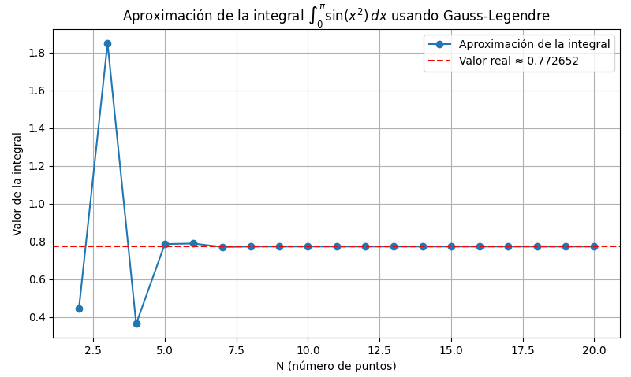

Tutorial
En este apartado nos centraremos en la explicación de como utilizar el código de este proyecto para calcular una integral definida utilizando la técnica de cuadratura gaussiana.
Introducción Rápida
En este tutorial, aprenderemos a implementar y utilizar la cuadratura gaussiana para calcular la siguiente integral: \begin{align} \int_{0}^{\pi} \sin(x^2)dx \end{align}
Requisitos previos
Antes de comenzar, asegurarse de tener instaladas las siguientes bibliiotecas en python:
pip install numpy
pip install matplotlib
Paso 1: Crear el archivo
Desde la terminal creamos el archivo usando touch, por ejemplo: touch cuadratura.py. Esto nos crea un archivo vacío de python.
Paso 2: Importar las bibliotecas
import numpy as np
import matplotlib.pyplot as plt
Paso 3: Definir la función para puntos y pesos de Gauss-Legendre
def gaussxw(N):
x, w = np.polynomial.legendre.leggauss(N)
return x, w
Esta función retorna los puntos de muestreo (x) y pesos (w) en el intervalo \([-1, 1]\) para un N dado.
Paso 4: Escalar al intervalo deseado
def gaussxwab(a, b, x, w):
return 0.5 * (b - a) * x + 0.5 * (b + a), 0.5 * (b - a) * w
Esta función transforma los puntos y pesos del intervalo estándar \([-1, 1]\) al intervalo \([a, b]\).
Paso 5: Obtener los puntos y pesos
xN8, wN8 = gaussxw(8)
xN9, wN9 = gaussxw(9)
xN10, wN10 = gaussxw(10)
Se utilizan valores de \(N = 8, 9, 10\) para lograr una mejor aproximación de la integral, ya que la función es oscilatoria.
Paso 6: Escalar al intervalo \([0, \pi]\)
puntoMuestreoxN8, pesoMuestreowN8 = gaussxwab(0, np.pi, xN8, wN8)
puntoMuestreoxN9, pesoMuestreowN9 = gaussxwab(0, np.pi, xN9, wN9)
puntoMuestreoxN10, pesoMuestreowN10 = gaussxwab(0, np.pi, xN10, wN10)
Paso 7: Definir la función a integrar
def integralAproximada(argumento):
return np.sin(argumento * argumento)
Esta función representa el integrando \(\sin(x^2)\).
Paso 8: Calcular las aproximaciones
print(f"La aproximación de la integral con N=8 es {np.sum(pesoMuestreowN8 * integralAproximada(puntoMuestreoxN8)):.6f}")
print(f"La aproximación de la integral con N=9 es {np.sum(pesoMuestreowN9 * integralAproximada(puntoMuestreoxN9)):.6f}")
print(f"La aproximación de la integral con N=10 es {np.sum(pesoMuestreowN10 * integralAproximada(puntoMuestreoxN10)):.6f}")
Planteamos los códigos necesarios para la grafica de la integral vs los valores de N
Paso 9: Valores de N e inicializar el arreglo de resultados
valoresN = np.arange(2, 21)
resultadoIntegral = np.zeros(valoresN.size)
Paso 10: Realizamos el ciclo for para que recorra cada uno de los valores de N
for i, N in enumerate(valoresN):
x, w = gaussxw(N) # Obtener los puntos y pesos
xN, wN = gaussxwab(0, np.pi, x, w) # Escalar al intervalo [0, π]
resultadoIntegral[i] = np.sum(wN * integralAproximada(xN)) # Aproximación y almacenarla en el arreglo resultadoIntegral
Paso 11: Graficamos los resultados junto al valor aproximado de la integral
El valor real(Aproximado de la integral) se obtuvo mediante el programa de wolfram Alpha Resultado Integral
plt.figure(figsize=(8, 5))
plt.plot(valoresN, resultadoIntegral, marker='o', label='Aproximación de la integral')
plt.axhline(y=0.772652, color='r', linestyle='--', label='Valor real ≈ 0.772652')
plt.title(r"Aproximación de la integral $\int_0^\pi \sin(x^2)\,dx$ usando Gauss-Legendre")
plt.xlabel("N (número de puntos)")
plt.ylabel("Valor de la integral")
plt.grid(True)
plt.legend()
plt.tight_layout()
plt.show()
Ejecutar el código
Guardar el archivo y ejecutarlo en la terminal
python cuadratura.py
Gráfica:
